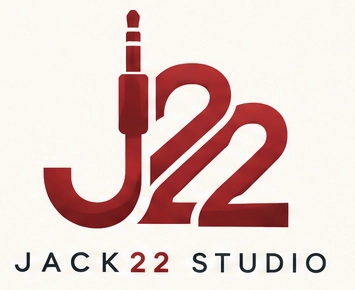
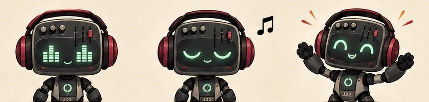
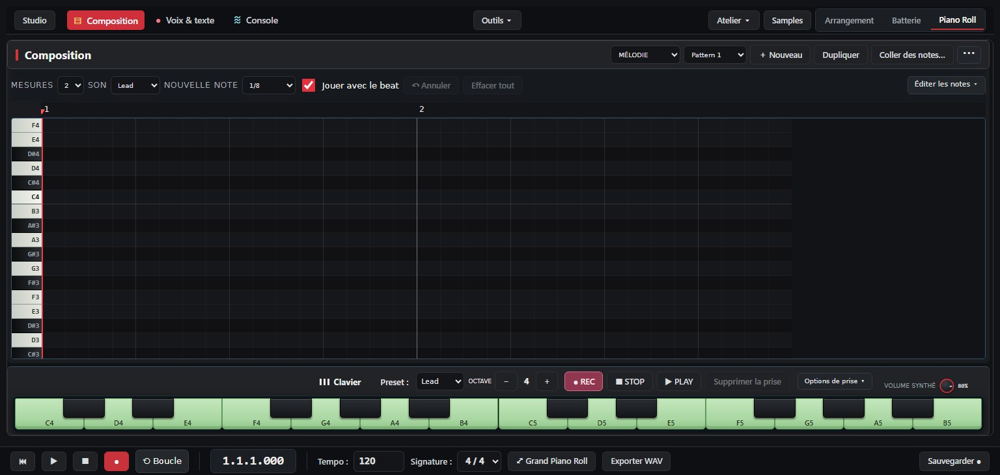
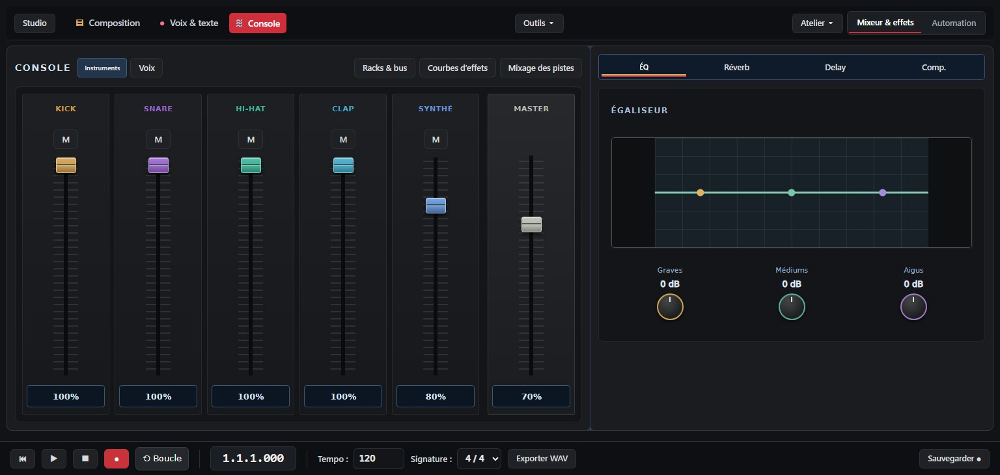
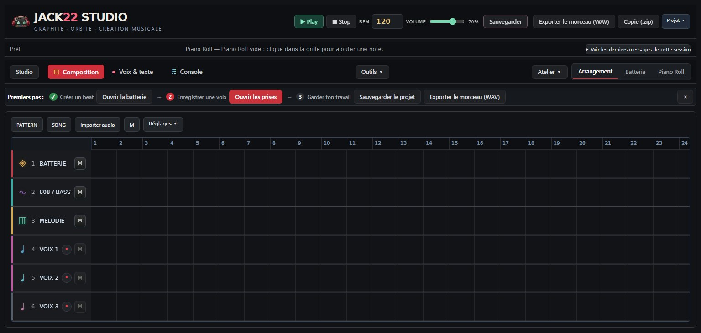
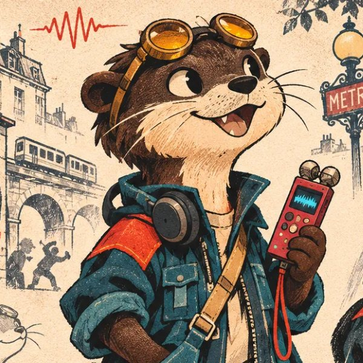
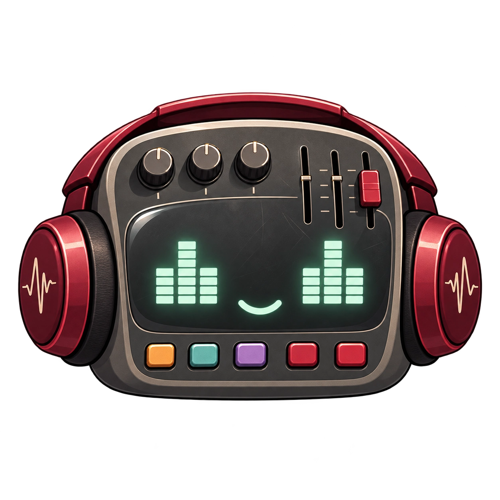
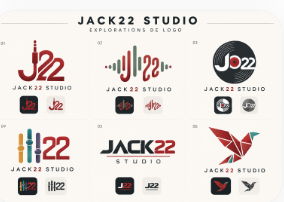

JACK22 STUDIO / CRÉATION MUSICALE
Ton premier beat.
Ton premier couplet.
Ton propre son.
Tu as des textes dans ton téléphone, un flow en tête ou simplement l’envie de commencer ? JACK22 réunit les outils pour composer, poser ta voix et donner forme à tes idées.
JACK22 STUDIO 11.5 · Windows / Edge privilégiés
Prototype en développement, sans compte JACK22.

TON GUIDE AU STUDIO
Jackbot, ton ingénieur du son.
Casque rouge, yeux en vumètres : Jackbot t’accompagne à chaque étape. Il écoute, il règle, il fête ton premier morceau avec toi.
Rencontrer Jackbot ↓
01 / LE STUDIO
Pas besoin d’être pro.
Crée ton son.
Pas besoin de tout connaître pour faire un premier essai. Pose un rythme, ajoute une mélodie, enregistre quelques lignes. Expérimente, recommence, trouve ce qui te ressemble.
Fais naître le beat.
Place tes kicks, tes snares et tes hi-hats. Ajoute une basse 808 et une mélodie au synthé pour créer ta première boucle.
Fais entendre ta voix.
Prépare ton texte, branche ton micro et enregistre ta prise. Trois emplacements te permettent d’explorer différentes idées vocales.
Fais-en un morceau.
Organise tes blocs, équilibre les niveaux et ajoute des effets. Exporte un WAV pour écouter ton résultat et le partager.
Tes rythmes. Tes mélodies. Ta voix.
Ouvrir JACK22 STUDIO 11.5 ↗À L’INTÉRIEUR DE JACK22
Voici ton
terrain de jeu.
Des images du studio pour te repérer avant de commencer. Un rythme, quelques notes, ta voix : avance à ton rythme.



Captures de JACK22 STUDIO 11.5, la toute dernière version, présentées avec un projet vide.
TU DÉBUTES ? TU ES À TA PLACE.
Tu n’y connais rien ?
Commence ici.

La technique s’explore en pratiquant. Tu n’as pas besoin d’avoir toutes les réponses pour tester un rythme ou enregistrer tes premières lignes. Choisis ce qui te donne envie aujourd’hui.
De l’énergie
dans la boucle.
Construis un rythme à 16 pas, essaie la basse 808 et ajoute quelques notes. Tu peux commencer sans microphone.
Découvrir la composition ↗02 / JE VEUX RAPPERDes mots.
Du flow. Toi.
Importe ton instrumentale si tu en as une, prépare ton couplet et pose ta voix. Un casque et un micro t’aideront à faire tes essais.
Découvrir les prises voix ↗03 / J’AI DÉJÀ DES TEXTESDu téléphone
à la première prise.
Rassemble tes paroles dans le projet et utilise le prompteur pour les garder sous les yeux pendant l’enregistrement.
Découvrir les paroles ↗02 / DU DÉCLIC AU MORCEAU
Du beat au couplet.
Garde ton élan.
Tu veux rapper, chanter ou créer une instrumentale ? Découvre ce que tu peux faire à chaque étape, puis lance-toi à ta manière.
Le rythme,
c’est toi.
Construis tes patterns de batterie, dessine ta mélodie dans le Piano Roll et explore les cinq sons du synthé JX-22, dont la basse 808.
- Crée ton rythme en cliquant
- Essaie des sons et des basses
- Assemble les parties de ton morceau
03 / TON SON, À TA FAÇON
Le bon équilibre.
Ta signature.
Une voix plus présente. Une basse mieux dosée. Un peu d’espace autour de ton refrain. Explore l’égaliseur, la réverbération, le delay et le compresseur pour façonner ton résultat, un réglage après l’autre.
L’UNIVERS JACK22 STUDIO
Jackbot,
à ton écoute.
Le petit ingénieur du son de JACK22 t’accompagne du premier beat au morceau. Choisis une vignette pour retrouver les outils du studio.
Ouvrir le studio ↗ JACKBOT · VOIR EN GRAND ↗Voir aussi la planche de Jackbot ↗
JACKBOT · VOIR EN GRAND ↗Voir aussi la planche de Jackbot ↗



SILLAGE · VOIR LA PLANCHE ↗LE DEUXIÈME COMPAGNON DE STUDIO
Sillage,
à l’affût du son.
Enregistreur à la main, lunettes sur le front, Sillage capte les sons de la ville : une goutte qui tombe, un métro qui passe, la pluie sur les pavés. Avec Sillage, chaque bruit du quotidien peut devenir un son de ton morceau.

À EXPLORER DANS LE STUDIO
Choisis ton prochain son.

Compose ton premier beat
Découvrir le clavier et les instruments.
Équilibre ton mix
Trouver la bonne place pour chaque son.
Construis ton morceau
Ouvrir le studio pour assembler tes idées.

Les signatures JACK22Voir la planche des logos ↗
JACK22 · NOTRE UNIVERS
Un studio.
Toutes tes idées.
Créer un rythme, écrire un couplet, essayer une voix : chaque envie a sa place. Notre identité accompagne ta création, du premier clic au premier morceau.
UN PREMIER OBJECTIF, TRÈS CONCRET
Huit mesures.
Un couplet.
Un début qui compte.
Voici un exemple de parcours pour te lancer. Ce n’est pas une recette imposée : ton morceau peut prendre une autre direction.
Je me lance ↗- 01
Trouve ta pulsation.
Choisis ton tempo et construis une boucle de batterie. Ajoute la basse ou importe une instrumentale.
- 02
Prépare quelques lignes.
Écris ton texte et place tes éléments dans l’arrangement. Pas besoin de finir un album : commence par un passage.
- 03
Pose, écoute, recommence.
Enregistre une prise, règle son niveau et essaie les traitements. J-Tune s’applique après l’enregistrement, selon la voix et les réglages.
- 04
Garde ton travail.
Exporte ton morceau en WAV et une copie portable du projet pour pouvoir reprendre tes idées.
05 / PASSE DE L’IDÉE AU SON
Ton idée attend.
Pas besoin d’attendre.
Ouvre le studio gratuitement, directement dans ton navigateur. Essaie un beat, une mélodie, quelques mesures de rap : ton premier objectif peut rester simple. L’important, c’est de commencer.
Ton studio.
Dans ton navigateur.
Rien à installer, rien à télécharger : le studio s’ouvre dans ton navigateur et tu commences à créer tout de suite. Pense à exporter ton projet pour garder une copie de ton travail.
Ouvrir JACK22 STUDIO 11.5 ↗Windows / Edge privilégiés · Gratuit · Pas de compte JACK22
AVANT DE TE LANCER
On répond
simplement.
Est-ce que JACK22 est gratuit ? +
Oui, les versions proposées ici sont gratuites. Le projet explore à terme des packs de sons et de presets payants ; aucune boutique ni offre payante n’est ouverte sur cette page.
Où sont enregistrés mes morceaux ? +
La sauvegarde du studio utilise le stockage de ton navigateur. Elle peut disparaître si tu effaces ses données. Utilise « Exporter projet » pour conserver une archive sur ton ordinateur, et garde tes fichiers audio d’origine.
Est-ce un logiciel terminé ? +
JACK22 est un prototype fonctionnel en développement. Certaines fonctions ont été testées automatiquement dans Chromium. Cela ne remplace pas des essais d’écoute, de micro et de stabilité sur ton ordinateur.
Puis-je enregistrer ma voix ? +
Le studio prévoit trois prises voix, avec autorisation du microphone. Un casque est conseillé pour éviter que le micro réenregistre le beat. La latence dépend de ton matériel ; un outil de mesure est présent dans le studio.
Quels visuels sont présentés ? +
Nos logos et Jackbot accompagnent la présentation des possibilités de JACK22. Ils font partie de notre identité ; les illustrations de marque ne sont pas des captures du logiciel.